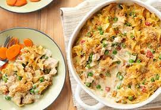

Campbell's Tuna Noodle Casserole

Campbell's CondensedCream of Mushroom Soup flavors
a creamy sauce that is mixed with tuna, egg noodles
and peas, topped with a crunchy bread crumb topping
and baked to perfection.
Ingredients
- 2 (10.75 ounce) cans Campbell's® Condensed Cream of Mushroom Soup (regular or 25% Lower Sodium)
- 1 cup milk
- 2 cups frozen peas
- 2 (10 ounce) cans tuna, drained
- 4 cups hot cooked medium egg noodles
- 2 tablespoons dry bread crumbs
- 1 tablespoon butter, melted
Directions
- Stir soup, milk, peas, tuna and noodles in 3-quart casserole.
- Bake at 400 degrees F for 30 minutes or until hot. Stir.
- Mix bread crumbs with butter in bowl and sprinkle over tuna mixture. Bake for 5 minutes more.